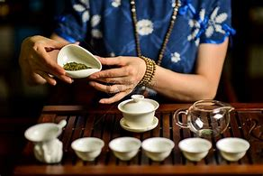
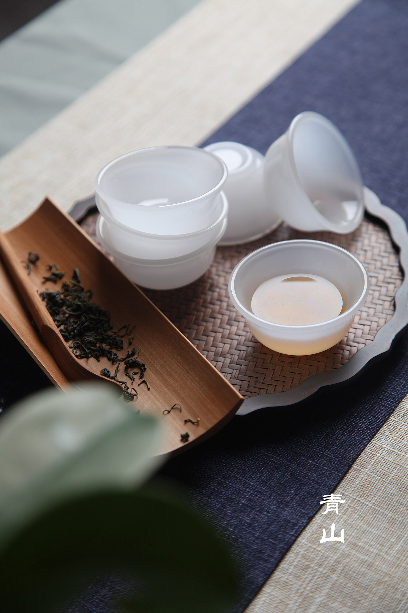
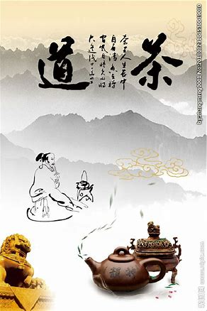

中国茶道
起源： 茶道起源于中国。中国人至少在唐或唐以前，就在世界上首先将茶饮作为一种修身养性之道，唐朝《封氏闻见记》中就有这样的记载：“茶道大行，王公朝士无不饮者。”（意思就是：喝茶，饮茶等茶道被广泛的推行，风靡一时，王公贵族朝臣没有不喝茶的人。）这是现存文献中对茶道的最早记载。由此可见，最早最完善的茶道流程就是唐代陆羽所创的煎茶茶道。吕温在《三月三茶宴序》中对茶宴的优雅气氛和品茶的美妙韵味，作了非常生动的描绘。在唐宋年间人们对饮茶的环境、礼节、操作方式等饮茶仪程都已很讲究，有了一些约定俗成的规矩和仪式，茶宴已有宫庭茶宴 、 寺院茶宴、文人茶宴之分。对茶饮在修身养性中的作用也有了相当深刻的认识。宋徽宗赵佶是一个茶饮的爱好者，他认为茶的芬芳品味，能使人闲和宁静、趣味无穷：“至若 茶之为物，擅瓯闽之秀气，钟山川之灵禀，祛襟涤滞，致清导和，则非庸人孺子可得而知矣；冲淡简洁，韵高致静……”南宋绍熙二年（公元1191年）日本僧人荣西将茶种从中国带回日本，从此日本才开始遍种茶叶。在南宋末期（公元1259年）日本南浦昭明禅师来到我国浙江省余杭县的径山寺取经，交流了该寺院的茶宴仪程，首次将中国的茶道引进日本，成为中国茶道在日本的最早传播者。日本《类聚名物考》对此有明确记载：“茶道之起，在正元中筑前崇福寺开山南浦昭明由宋传入。”日本《本朝高僧传》也有“南浦昭明由宋归国，把茶台子、茶道具一式带到崇福寺”的记述。日本茶道(9张)直到日本丰臣秀吉时代（公元1536～1598年，相当于我国明朝中后期）千利休成为日本茶道高僧后，才高高举起了“茶道”这面旗帜，并根据《诗经》总结出茶道四规：“和、敬、清、寂”，显然这个基本理论是受到了中国茶道精髓的影响而形成的，其主要的仪程框架规范仍源于中国。中国的茶道出现很早，但遗憾的是中国虽然很早提出了“茶道”的概念，也在该领域中不断实践探索，却没有能够旗帜鲜明地以“茶道”的名义来发展这项事业，也没有规范出具有传统意义的茶道礼仪。中国的茶道可以说是重精神而轻形式。有学者认为必要的仪式对“茶道”的旗帜来说是较为重要的，没有仪式光自称有“茶道”，虽然也不能说不可以，搞得有茶就可以称道，那似乎就泛化了，最终也“道可道，非常道”了。泡茶本是一件很简单的事情，简单得来只要两个动作就可以了：放茶叶、倒水。但是在茶道中，那一套仪式又过于复杂或是过于讲究了，一般的老百姓肯定不会把日常的这件小事搞得如此复杂。事实上中国茶道并没有仅仅满足于以茶修身养性的发明和仪式的规范，而是更加大胆地去探索茶饮对人类健康的真谛，创造性地将茶与中药等多种天然原料有机地结合，使茶饮在医疗保健中的作用得以大大地增强，并使之获得了一个更大的发展空间，这就是中国茶道最具实际价值的方面，也是千百年来一直受到人们重视和喜爱的魅力所在。 [2]唐代的饮茶方式和唐代的茶汤与我们现在的概念完全不同。唐代饮茶，是将茶饼切碎碾成粉末，过“罗” （“罗”，就是筛子。“茶罗”是一种专门用来筛茶粉的茶具）后加入沸水中煮成糊状，同时还要往里加盐、葱、姜、桔皮、薄荷等，类似于一种可怕的“胡辣汤”。也难怪这种彻底怪味、想象起来都让人觉得不堪下咽的“茶汤”能提神，能让人喝了不打瞌睡。 [5]唐代的茶道向后世流传，在经历了元朝统治的一百年后彻底在中国的土地上湮灭。反倒是日本茶道中保留了一部分唐代茶道的内容。元代兴起的茶叶泡水一直传到了现在，但这里已经没有了“道”的成分。今日盛行于中国的所谓“茶道”、“茶文化”，所谓“‘勤和简静’的茶道思想”，以及诸多扭捏姿态，全是近三十年来好事者向壁捏造故弄玄虚的胡扯。所谓“茶文化的研究”，自然更是瞎掰居多。还有更荒诞的所谓沤了若干年的一个普洱茶饼子价渝百万的宣传，则简直形同欺诈。这正是所谓器之不存，道亦不复。 [5]所以，尽管“茶道”这个词从唐代至今已使用了一千多年，但至今在《新华词典》、《辞海》、《词源》等工具书中均无此词条。茶道属于东方文化。东方文化与西方文化的不同，在于东方文化往往没有一个科学的、准确的定义，而要靠个人凭借自己的悟性去贴近它、理解它。早在我国唐代就有了“茶道”这个词，例如，《封氏闻见记》中：“又因鸿渐之论，广润色之，于是茶道大行。”唐代刘贞亮在《饮茶十德》中也明确提出：“以茶可行道，以茶可雅志。”文学家王心鉴《咏茶叶》诗中说：千挑万选白云间，铜锅焙炒柴火煎。泥壶醇香增诗趣，瓷瓯碧翠泯忧欢。老君悟道养雅志，元亮清谈祛俗喧。不经涅槃渡心劫，怎保本源一片鲜。茶道通过品茶活动来表现一定的礼节、人品、意境、美学观点和精神思想的一种行为艺术。它是茶艺与精神的结合，并通过茶艺表现精神。兴于中国唐代，盛于宋、明代，衰于清代。中国茶道的主要内容讲究五境之美，即茶叶、茶水、火候、茶具、环境，同时配以情绪等条件，以求“味”和“心”的最高享受。被称为美学宗教，以和、敬、清、寂为基本精神的日本茶道，则是继承唐宋遗风。深入挖掘中国文化内涵，深入研究探索中国文化的复兴。茶文化既属中国文化范畴，即为以礼规范在品茶的各个细节，讲究茶叶、茶水、火候、茶具、环境、和饮者的修养、情绪等共同形成的一种意境之美。茶文化的内涵其实就是中国文化的内涵一种具体表现，谈茶文化必须结合中国传统文化而论之。茶文化的精神内涵即是通过沏茶、赏茶、闻茶、饮茶、品茶等习惯和中华的文化内涵礼相结合形成的一种具有鲜明中国文化特征的一种文化现象，也可以说是一种礼节现象。 代表人物： 茶圣陆羽陆羽（约733—约804），字鸿渐，唐朝唐代茶学家，复州竟陵（今湖北天门市）人，号“茶山御史” ，性诙谐，与女诗人李季兰、诗僧皎然交厚。陆羽一生嗜茶，精于茶道，唐朝上元初年（公元760年），陆羽隐居苕溪（今浙江湖州），撰《茶经》三卷，对茶的性状、品质、产地、种植、采制、烹饮、器具等皆有论述，成为世界上第一部茶叶专著，唐代茶学家，其也因此而被后人尊为“茶圣” [6]。茶仙卢仝卢仝
相关图片(4张)卢仝 [7]，唐诗人。自号玉川子。广泛的说法是范阳（今河北涿州）人，其实是今河南济源市思礼人。才华横溢而他不愿仕进，年轻时便隐居少室山茶仙谷茶仙泉饮茶作诗度日，朝廷曾两度要起用他为谏 议大夫，均不就。曾作《月食诗》讽刺当时宦官专权，受到韩愈称赞（时韩愈为河南令）。甘露之变时，因留宿宰相王涯家，与王同时遇害。其在少室山茶仙谷茶仙泉隐居时著有《茶谱》和《七碗茶诗》，对中国茶文化乃至日本茶道都影响深刻，其也因此而被后人誉为茶仙 [8]。 品茶礼仪： 我国是茶的故乡，有着悠久的种茶汗青，又有着严格的敬茶礼节，还有着怪异的吃茶喝茶风尚。我国吃茶喝茶，从神农时代开始，少说也有四千七百多年了。茶礼有缘，古已有之。客来敬茶，这是汉族最早重情好客的传统美德与礼节。直到此刻，宾客至家，总要沏上一杯香茗。喜庆勾当，也喜用茶点招待。开个茶话会，既简便经济，又典雅持重。  所谓君子之交淡如水，也是指清香宜人的茶水。我国汉族还有各种以茶代礼的风尚。南宋国都杭州，每逢立夏，家家各烹新茶，并配以各色细果，馈送亲友毗邻，叫作七家茶。这种风尚，就是在茶杯内放两颗青果 即橄榄或金桔，暗示新春吉祥如意的意思。 [9]茶礼还是我国古代婚礼中一种隆重的礼节的。明·许次纾在《茶疏考本》中说：茶不移本，植必子生。古人成婚以茶为识，以为茶树只能从种子萌芽成株，不能移植，否则就会枯死，因此把茶看作是一种至性不移的象征。所以，民间男女订亲以茶为礼，女方接受男方聘礼，叫下茶或茶定，有的叫受茶，并有一家不吃两家茶的谚语。同时，还把整个婚姻的礼仪总称为三茶六礼。三茶，就是订亲时的下茶，成婚的定茶，同房时的合茶。下茶又有男茶女酒之称，即定婚时，男家除送如意压帖外，要回送几缸绍兴酒。婚礼时，还要行三道茶典礼。三道茶者，第一杯百果，第二杯莲子、枣儿；第三杯方是茶。吃的方式，接杯之后，双手捧之，深深作揖，然后向嘴唇一触，即由家人收去。第二道亦如此。第三道，作揖后才可饮。这是最尊敬的礼仪。这些繁俗，此刻当然没有了，但婚礼的敬茶之礼，仍沿用成习 发展： 中国是茶树的原产地，然而，世界上的茶树原产地并不是只有中国一个，在世界上的其它国家也发现原生的自然茶树。但是，世界公认，中国在茶业上对人类的有着卓越的贡献，这主要在于：最早发现并利用茶这种植物，把它发展形成为中国一种灿烂独特的茶文化，并且逐步地传播到中国的周边国家乃至整个世界。秦汉以前 巴蜀是中国茶业的摇篮顾炎武曾道：“自秦取蜀而后，始有茗饮之事”，认为饮茶是秦统一巴蜀之后才开始传播开来，肯定了中国和世界的茶叶文化，最初是在巴蜀发展起来的。这一说法，现已被绝大多数学者认同。巴蜀产茶，可追溯到战国时期或更早，巴蜀已形成一定规模的茶区，并以茶为贡品。关于巴  蜀茶业在中国早期茶业史上的突出地位，直到西汉成帝时王褒的《童约》，才始见诸记载，内有“烹荼尽具”及“武阳买茶”两句。前者反映成都一带，西汉时不仅饮茶成风，而且出现了专门用具；从后一句可以看出，茶叶已经商品化，出现了如“武阳”一类的茶叶市场。西汉时，成都不但已形成为中国茶叶的一个消费中心，由后来的文献记载看，很可能也已形成了最早的茶叶集散中心。不仅仅是在秦之前，秦汉乃至西晋，巴蜀 仍是中国茶叶生产和技术的重要中心。三国两晋 长江中游成为茶业发展壮大秦汉时期，茶业随巴蜀与各地经济文化而传播。首先向东部、南部传播，如湖南茶陵的命名，就是一个佐证。茶陵是西汉时设的一个县，以其地出茶而名。茶陵邻近江西、广东边界，表明西汉时期茶的生产已经传到了湘、粤、赣毗邻地区。三国、西晋阶段，随荆楚茶业和茶叶文化在全国传播的日益发展，也由于地理上的有利条件和较好的经济文化水平，长江中游或华中地区，在中国茶文化传播上的地位，逐渐取代巴蜀而明显重要起来。三国时，孙吴据有东南半壁江山，这一地区，也是这时中国茶业传播和发展的主要区域。此时，南方栽种茶树的规模和范围有很大的发展，而茶的饮用，也流传到了北方高门豪族。西晋时长江中游茶业的发展，还可从西晋时期《荆州土记》得到佐证。其载曰“武陵七县通出茶，最好”，说明荆汉地区茶业的明显发展，巴蜀独冠全国的优势，似已不复存在。南渡西晋之后，北方豪门过江侨居，建康（南京）成为中国南方的政治中心。这一时期，由于上层社会崇茶之风盛行，使得南方尤其是江东饮茶和茶叶文化有了较大的发展，也进一步促进了中国茶业向东南推进。这一时期，中国东南植茶，由浙西进而扩展到了现今温州、宁波沿海一线。不仅如此，如《桐君录》所载，“西阳、武昌、晋陵皆出好茗”，晋陵即常州，其茶出宜兴。表明东晋和南朝时，长江下游宜兴一带的茶业，也著名起来。三国两晋之后，茶业重心东移的趋势，更加明显化了。唐代 长江中下游地区成为茶叶生产和技术中心六朝以前，茶在南方的生产和饮用，已有一定发展，但北方饮者还不多。及至唐朝中后期，如《膳夫经手录》所载“今关西、山东，闾阎村落皆吃之，累日不食犹得，不得一日无茶”。中国嗜茶成俗，于是南方茶的生产，随之空前蓬勃发展了起来。尤其是与北方交通便利的江南、淮南茶区，茶的生产更是得到了格外发展。唐代中叶后，长江中下游茶区，不仅茶产量大幅度提高，就是制茶技术，也达到了当时的最高水平。舒州集贤沐芽、湖州紫笋和常州阳羡茶成为了贡茶就是集中体现。茶叶生产和技术的中心，已经转移到了长江中游和下游，江南茶叶生产，集一时之盛。当时史料记载，安徽祁门周围，千里之内，各地种茶，山无遗土，业于茶者十之七八。同时由于贡茶设置在江南，大大促进了江南制茶技术的提高，也带动了全国各茶区的生产和发展。由《茶经》和唐代其它文献记载来看，这时期茶叶产区已遍及今之四川、陕西、湖北、云南、广西、贵州、湖南、广东、福建、江西、浙江、江苏、安徽、河南等十四个省区，几乎达到了与中国近代茶区约略相当的局面。宋代 茶业重心由东向南移从五代和宋朝初年起，全国气候由暖转寒，致使中国南方南部的茶业，较北部更加迅速发展了起来，并逐渐取代长江中下游茶区，成为茶业的重心。主要表现在贡茶从顾渚紫笋改为福建建安茶，唐时还不曾形成气候的闵南和岭南一带的茶业，明显地活跃和发展起来。宋朝茶业重心南移的主要原因是气候的变化，长江一带早春气温较低，茶树发芽推迟，不能保证茶叶在清明前贡到京都。福建气候较暖，如欧阳修所说：“建安三千里，京师三月尝新茶。”作为贡茶，建安茶的采制，必然精益求精，名声也愈来愈大，成为中国团茶、饼茶制作的主要技术中心，带动了闵南、岭南茶区的崛起和发展。由此可见，到了宋代，茶已传播到全国各地。宋朝的茶区，基本上已与现代茶区范围相符，明清以后，茶区基本稳定，茶业的发展主要是体现在茶叶制法和各茶类兴衰演变。 Copyright © 2023-12-12 ALL Rights Reserved |